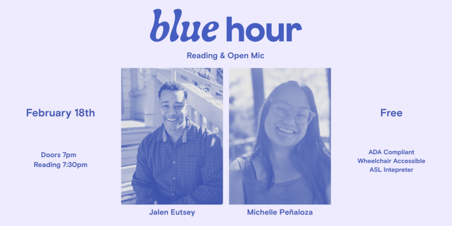

Chicago Poetry Center Presents: Blue Hour featuring Jalen Eutsey + Michelle Penuloza
The Chicago Poetry Center presents BLUE HOUR, a free monthly in-person reading series and generative writing workshop. Our February featured readers are Jalen Eutsey and Michelle Peñaloza.
Each event takes place at Haymarket House (800 W. Buena) and includes a brief open mic followed by two featured poets. Pre-registration is free and recommended. The open mic includes five readers drawn lottery-style from a hat that goes out at 7:15. The reading starts promptly at 7:30. Each open mic poet reads one poem or for three minutes, whichever comes first.
EVENT DETAILS FOR February 18
The workshop (registration required) begins promptly at 6 p.m. and ends at 7 p.m.
Doors open and open mic lottery registration starts at 7 p.m. — the open mic begins promptly at 7:30, followed by our amazing featured readers.
Reading registration is free; the workshop is a sliding scale with a suggested donation of $10.
Register for the workshop (required, and sells out quickly): https://BHWorkshopFeb2026.eventbrite.com
And RSVP for the reading here (recommended): https://Feb2026BlueHour.eventbrite.com